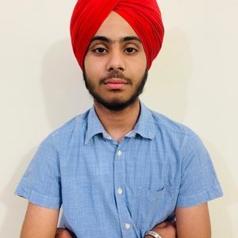

The AWESOME Nitin and Juan's website
Nitin Ganwani
Dirección:
Correo electrónico:
Número de teléfono:
Experiencia laboral
-
Maestro Afilador del barrio de Tetuán
Fecha de inicio: 17/04/202 - Fecha de fin: 10/03/2023
Desempeño de los mejores y más precisos afilados de la península ibérica.
-
Aprendiz de mimo
Fecha de inicio: 20/03/2018 - Fecha de fin: 09/02/2020
Maniobras de mimo de alta intensidad, tales como limpieza de ventana, apertura de puerta imaginaria y recogida de cable.
Educación
-
Licenciatura de Magia Borrás
Fecha de inicio: 10/09/2007 - Fecha de fin: 25/09/2010
Estudios de alta magia de mano de los mejores maestros. Corte de baraja de cartas con una mano, llegar a fin de mes, etc.
-
Curso de cocina para presupuestos ajustados
Fecha de inicio: 25/10/2005 - Fecha de fin: 12/07/2006
Conocimientos amplios sobre alta cocina con productos del día a día para personas con un presupuesto muy ajustado. Sandwiches de pan, bowl de cereales con mezcla de agua y leche, etc.
Objetivo
Llegar a ser alguien útil en la vida actual, debido a presiones constantes de mi pareja, de mis padres y de mi cuñado.
Juan García
Profesión
- e-mail@e-mail.com
- 666-666-666
- Murcia
- 31/12/1900
Work Experience
- Google
blablabla blablabla blablabla
- Airbnb
blablabla blablabla blablabla
Education
- University of Murcia
- University of North Carolina
Languages
- Spanish
- English
- Russian